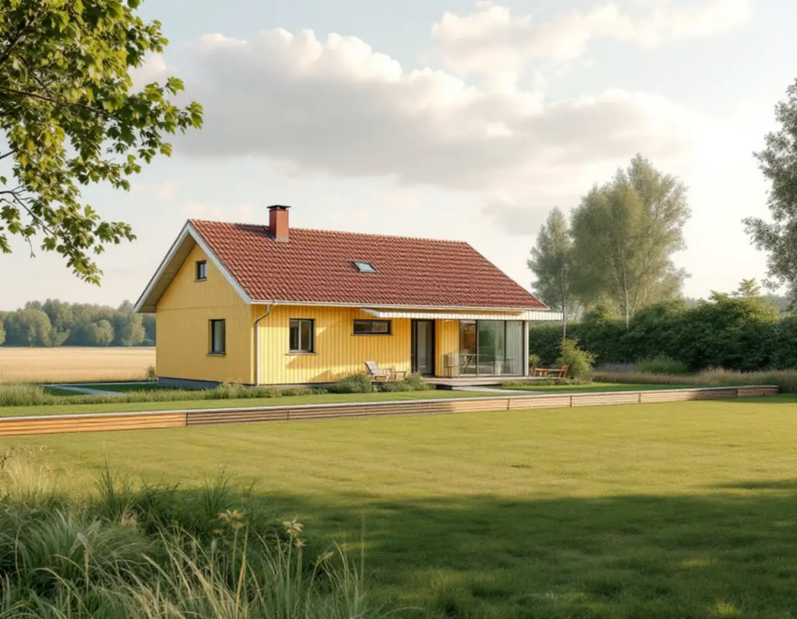
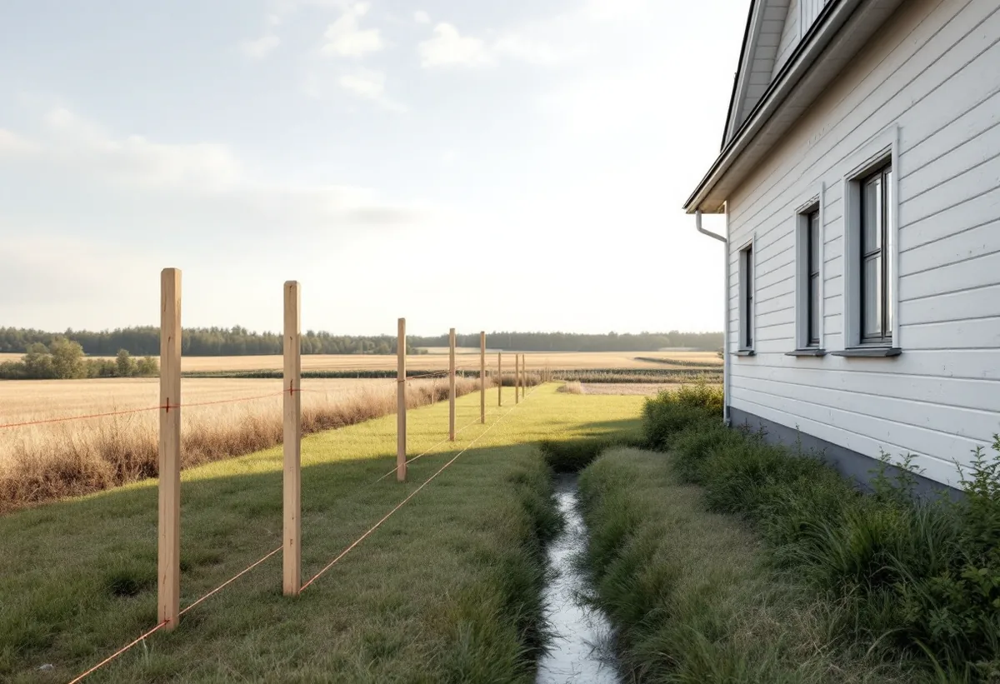

Platsbesök
Vi tittar på huset, tomtens höjder och var gränserna mot grannar och kommunal mark går.
Vallentuna har 9 300 bostäder i småhus enligt SCB:s statistik för 2025, och omkring 8 000 av kommunens invånare bor på landsbygden och i de mindre orterna som Lindholmen, Karby, Brottby, Kårsta, Ekskogen och Frösunda. Oavsett var huset står går ett byggprojekt fortare när ritningarna är kompletta från början och tomtens gränser mot grannar och kommunal mark är utredda. Geal Entreprenad AB tar hand om tillbyggnader, nya hus och större ombyggnader som total entreprenad.

Vallentuna kommun vill att situationsplanen görs på en nybyggnadskarta som beställs från kommunens kart- och mätavdelning. Den ska visa befintliga och planerade markhöjder mot grannar och väg, stödmurar och slänter, hur infarten ansluter till gatan med plushöjder, parkering, vilka byggnader som ska bevaras eller rivas, nybyggnadens alla yttermått och minst tre mått till fastighetsgränsen.
Utanför kommunalt VA-område ska planen också visa var enskilt avlopp och brunn ska ligga. Dessutom ska tillgängligheten till byggnaderna och plats för utevistelse och avfallshantering redovisas, antingen på situationsplanen eller på en markplaneringsritning.
Kommunen påpekar att dagvattnet ska tas om hand på den egna fastigheten. Normalt innebär det att ny och befintlig marknivå möts ungefär 0,5 meter från tomtgränsen, så att det finns plats för ett dike eller dränering. Ändras marken ska både den befintliga linjen, streckad, och den nya, heldragen, ritas ut ända till gränsen.

Planritningen ska visa rummen och deras funktion, väggtjocklekar, fönster, dörrar och trappor, fast inredning som kök, tvätt, wc och dusch, möblering, mått och bruttoarea och boarea för varje plan. I en bostad ska entréplanet enligt kommunen minst rymma hygienrum, en avskiljbar sovplats, matlagning, plats för måltider och sittgrupp samt förvaring och tvätt. För små bostäder på högst 35 kvadratmeter gäller andra regler.
Fasadritningen ska visa takvinklar, fönster, dörrar och skärmtak, blivande och befintlig marknivå fram till tomtgränsen och material och färgsättning. Vid en tillbyggnad ska nytt och befintligt redovisas, och det nya markeras. En sektionsritning krävs vid ny- och tillbyggnad och när konstruktionen påverkas. Den ska visa rumshöjder, golvhöjder på alla plan, bjälklagen med isolering och takvinklar.
Är ansökan komplett får du oftast beslut inom tio veckor. I mer komplicerade fall kan tiden förlängas, men med högst tio veckor. Därför går vi igenom kommunens lista punkt för punkt innan något lämnas in.
Grannar får yttra sig om fastigheten ligger inom detaljplan och åtgärden avviker från planen, om den avviker från områdesbestämmelser eller om fastigheten ligger utanför detaljplan och områdesbestämmelser. Utanför plan gäller ett undantag för komplementbyggnader, mindre tillbyggnader och fasadändringar till en- och tvåbostadshus. Vid enskilt avlopp och bergvärme är det kommunens miljöavdelning som bedömer vilka grannar som ska höras.
Följer bygget detaljplanen finns inget krav på att grannarna hörs innan lovet beviljas, och kommunen behöver inte kontakta grannar vid lovfria åtgärder. Efter ett beslut informeras grannarna och beslutet kungörs på kommunens anslagstavla. Den som vill överklaga har normalt tre veckor från att ha tagit del av beslutet, eller fyra veckor från kungörelsen om man inte delgetts. Överklagandet prövas av Länsstyrelsen Stockholm.
Ibland visar sig ett staket, en studsmatta eller till och med en byggnad stå på kommunens mark. Kommunen kallar det markannektering, och upptäcks det måste fastighetsägaren ta bort sina saker, även om utökningen funnits länge. Kommunen skriver att den mycket sällan säljer tillskottsmark till privata bostadstomter, eftersom marken oftast är allmän plats i detaljplanen. Då krävs en ändring av planen, och den som vill pröva det kan ansöka om planbesked.
En begäran om planbesked ska vara skriftlig, beskriva vad du vill göra och innehålla en karta. Normalt kommer beskedet inom fyra månader. Det är inte bindande och kan inte överklagas, och den som ansöker betalar handläggningen.
Under ett bygge kan kommunen tillfälligt upplåta mark, till exempel för en container, och i flera fall krävs dessutom polistillstånd. Inom detaljplan krävs marklov för schakt och fyllning som ändrar höjden mer än 0,5 meter. Om mindre byggen på tomten, se snickare i Vallentuna, om taket takrenovering i Vallentuna och om arbetssättet under byggfirma.
Vi tittar på huset, tomtens höjder och var gränserna mot grannar och kommunal mark går.
Karta beställs och detaljplan eller områdesbestämmelser kontrolleras.
Byggdelar, mark och ROT-berättigat arbete redovisas var för sig.
Situationsplan, plan, fasad och sektion tas fram efter kommunens lista.
Vi samordnar alla hantverkare och sköter kontakten med kommunen under bygget.
Resultatet gås igenom med dig och handlingarna lämnas över.
En tillbyggnad på ett befintligt hus ger rotavdrag om den sitter ihop med ytterväggen till minst 75 procent på någon sida eller har en dörr emellan. Ett helt nytt hus, ett garage eller en annan fristående byggnad ger inget avdrag, och inte heller ritningar och bygglovshandlingar.
Avdraget är 30 procent av arbetskostnaden, högst 50 000 kronor per person och år och högst 75 000 kronor tillsammans med rutavdrag. Du ska äga bostaden när arbetet görs, och material och resor räknas inte. Vi drar avdraget direkt på fakturan.
Storlek, grundläggning och hur mycket marken ska ändras styr mest, liksom om avlopp och brunn ska ordnas på tomten. Kommunens avgifter för kartor och lov tillkommer. Efter ett gratis platsbesök får du ett skriftligt kostnadsförslag.
Total entreprenad för villan.
Byggfirma →Takbyte, takbesiktning och plåtarbeten.
Takläggare i Vallentuna →Villaområden och gårdar.
Takrenovering i Vallentuna →Nytt våtrum, Roslagsvatten och egen brunn.
Badrumsrenovering i Vallentuna →Fritidshus, stationssamhällen och villor i Vallentuna.
Fasadrenovering i Vallentuna →Flygbuller, glasval och lov i Vallentuna.
Fönsterbyte i Vallentuna →Golv på platta och golvvärme i villan.
Golvläggare i Vallentuna →Slipa och laga gamla golvplank.
Golvslipning i Vallentuna →Utbyggda kök, villor och gårdar.
Köksrenovering i Vallentuna →Gårdar, fritidshus och villor i Vallentuna.
Målare i Vallentuna →Rännor, plåttak och uthus i Vallentuna.
Plåtslagare i Vallentuna →Uthus, uterum och fritidshus.
Snickare i Vallentuna →